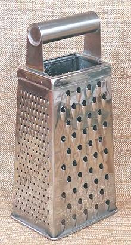
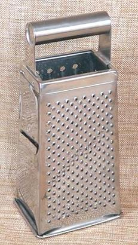

These devices are very convenient, and can often quickly do jobs that are difficult or nearly impossible with knives and mortars. On the other hand, there are jobs that knives and mortars do a lot better - use the right tool for the job
More on Kitchen Gear.
When recipes tell you to grate something, this is the device they usually picture you using - it has been a kitchen standard for centuries. There are other sizes and shapes, but this is the standard, and large enough to grate many sizes of cheeses and vegetables effectively. It is always ready and very easy to clean.   The photo specimen is a standard size, stainless Steel box grater, of unknown brand. It has been in use in my kitchen for 40 years or more. The cutting surfaces measures 4 x 2-7/8 inches at the base and 3-1/4 x 2-3/8 at the top. It is 9-1/2 inches tall, including the handle, with cutting surfaces 6-1/2 inches long.
The first photo shows the Large Hole and Small Hole sides. These cut things into medium strips and narrow threads. I probably use the small holes side the most, particularly for hard cheeses and to harvest lemon, lime, and orange zest. The big hole side I've used for soft cheeses, apples and other softer items.
The second photo shows the Nail Hole and Slicer sides. The nail hole side is particularly useful for grating ginger, onions, or other vegetables when your intent is to wrap them in cloth and wring out the juice for use in recipes. The slicer side is the most dangerous side, and I'd never used it, until I tested if for writing this page. It slices way thinner than I usually want things sliced, though I can see it as very useful when preparing some garnishes.
Clearly, this device must be used with care, but it is nowhere near
as dangerous as a Mandolin (the slicer, not the musical instrument,
which is dangerous only to finger tips). Where the Mandolin can take
significant flesh, this device will only cause abrasions - except the
slicer side (see above) which can cut, but not nearly as deeply.
These are grating and slicing disks for a Food Processor. They stand
on a stem so they are just below the top, and stuff shoved down the feed
tube hits them immediately. They are available in various configurations,
fine to coarse and thick to thin. These two came with my big KitchenAid
Food Processor. I'm sure they work well, but I've never used them. I
don't have counter space for the food processor, so I only bring it out
when I really need it, and it's a heavy SOB. The appropriate
spot on my counter is taken up by a big KitchenAid Stand Mixer, and
that isn't going to change.